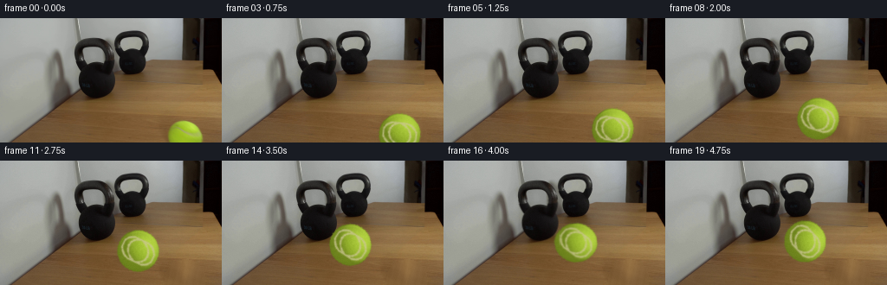
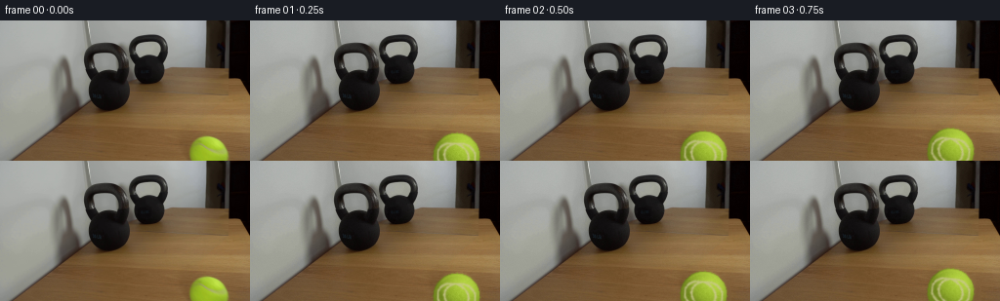

CODING AGENTS AS PIXEL WORLD MODELS
traex/DeepSeek-V4.1-Flash · 0154
点击播放 · 原生 RGB 像素
逐轮保存的候选
回放视频、检查图与代码变化。
每份候选均可单独播放。实际图片检查记录在下方工具轨迹中。
候选 01播放与检查图
点击播放 · 原生 RGB 像素

展开代码变化
--- 上一保存版本
+++ 本次保存版本
@@ -0,0 +1,262 @@
+from pathlib import Path
+import math
+
+import cv2
+import numpy as np
+from PIL import Image
+
+import artifact_io
+
+
+ROOT = Path(__file__).resolve().parent
+W, H, N, FPS = 256, 144, 20, 4
+
+# Opening-frame geometry, measured from first_frame.png.
+BALL0 = np.array([213.2, 140.0], dtype=np.float32)
+BALL_R = np.array([21.0, 23.5], dtype=np.float32)
+KETTLEBELL = np.array([111.5, 71.5], dtype=np.float32)
+KETTLEBELL_R = 21.5
+
+
+def smoothstep(x):
+ x = np.clip(x, 0.0, 1.0)
+ return x * x * (3.0 - 2.0 * x)
+
+
+def source_ball_mask(shape=(H, W), grow=1.0):
+ yy, xx = np.mgrid[: shape[0], : shape[1]]
+ dx = (xx - BALL0[0]) / (BALL_R[0] + grow)
+ dy = (yy - BALL0[1]) / (BALL_R[1] + grow)
+ return (dx * dx + dy * dy <= 1.0).astype(np.uint8)
+
+
+def clean_plate(source):
+ """Remove the clipped source ball and restore the wood underneath."""
+ mask = source_ball_mask(grow=1.7)
+ mask = cv2.dilate(mask, np.ones((3, 3), np.uint8), iterations=1)
+ plate = cv2.inpaint(source, mask * 255, 5, cv2.INPAINT_TELEA)
+
+ # Inpainting a large clipped circle can look flat. Restore a little of the
+ # table's low-frequency grain in the repaired area while keeping it stable.
+ y0, y1, x0, x1 = 113, H, 184, 241
+ patch = plate[y0:y1, x0:x1].astype(np.float32)
+ yy, xx = np.mgrid[y0:y1, x0:x1]
+ grain = (
+ 1.8 * np.sin(xx * 0.79 + yy * 0.12)
+ + 1.1 * np.sin(xx * 0.29 - yy * 0.67)
+ + 0.8 * np.sin(xx * 1.61 + yy * 0.43)
+ )
+ influence = cv2.GaussianBlur(mask[y0:y1, x0:x1].astype(np.float32), (0, 0), 2.0)
+ influence = np.clip(influence * 1.4, 0.0, 0.55)
+ patch += grain[:, :, None] * influence[:, :, None]
+ plate[y0:y1, x0:x1] = np.clip(patch, 0, 255).astype(np.uint8)
+ return plate
+
+
+def make_ball_sprite(size=51):
+ """Analytic tennis ball with a rotated seam and sampled source colors."""
+ yy, xx = np.mgrid[:size, :size].astype(np.float32)
+ c = (size - 1) * 0.5
+ u = (xx - c) / (size * 0.5 - 1.5)
+ v = (yy - c) / (size * 0.5 - 1.5)
+ rr = u * u + v * v
+ inside = rr <= 1.0
+ z = np.sqrt(np.clip(1.0 - rr, 0.0, 1.0))
+
+ # Light from the upper right, matching the tabletop and ball highlight.
+ light = np.array([0.47, -0.64, 0.61], dtype=np.float32)
+ light /= np.linalg.norm(light)
+ diffuse = np.clip(u * light[0] + v * light[1] + z * light[2], 0.0, 1.0)
+ rim = np.clip(1.0 - z, 0.0, 1.0)
+
+ base_dark = np.array([116.0, 139.0, 31.0])
+ base_mid = np.array([151.0, 184.0, 42.0])
+ base_light = np.array([188.0, 220.0, 68.0])
+ shade = np.clip((diffuse - 0.18) / 0.82, 0.0, 1.0)
+ shade = shade[:, :, None]
+ rgb = base_dark * (1.0 - shade) + base_light * shade
+ mid_weight = np.exp(-((diffuse - 0.62) / 0.22) ** 2)[:, :, None]
+ rgb = rgb * (1.0 - 0.30 * mid_weight) + base_mid * (0.30 * mid_weight)
+
+ # Soften the lower-left edge and add a narrow reflected-light rim.
+ rgb *= (1.0 - 0.12 * rim[:, :, None])
+ rim_light = np.exp(-((rr - 0.84) / 0.075) ** 2) * np.clip(
+ -0.52 * u - 0.72 * v, 0.0, 1.0
+ )
+ rgb += rim_light[:, :, None] * np.array([18.0, 18.0, 7.0])
+
+ # Tennis seam: two antipodal great-circle arcs on the visible hemisphere.
+ # Project 3D seam points and rasterize them with a small distance field.
+ seam_mask = np.zeros((size, size), np.float32)
+ for phase in (0.0, math.pi):
+ theta = np.linspace(0.0, 2.0 * math.pi, 320, endpoint=False)
+ sx = 0.68 * np.cos(theta)
+ sy = 0.56 * np.sin(theta + 0.10)
+ sz = np.sqrt(np.clip(1.0 - sx * sx - sy * sy, 0.0, 1.0))
+ # Tilt the great circle so the seam reads across the upper face.
+ ca, sa = math.cos(-0.20), math.sin(-0.20)
+ rx = ca * sx - sa * sz
+ rz = sa * sx + ca * sz
+ ry = sy
+ if phase:
+ rx, ry = -rx, -ry
+ visible = rz > -0.12
+ px = np.rint(c + rx * (size * 0.5 - 1.5)).astype(int)
+ py = np.rint(c + ry * (size * 0.5 - 1.5)).astype(int)
+ ok = visible & (px >= 0) & (px < size) & (py >= 0) & (py < size)
+ seam_mask[py[ok], px[ok]] = 1.0
+
+ seam_mask = cv2.GaussianBlur(seam_mask, (0, 0), 0.72)
+ seam_mask = np.clip(seam_mask * 2.1, 0.0, 1.0)
+ seam_color = np.array([205.0, 199.0, 149.0])
+ rgb = rgb * (1.0 - 0.72 * seam_mask[:, :, None])
+ rgb += seam_color * (0.72 * seam_mask[:, :, None])
+
+ # Deterministic felt/fuzz texture, strongest in the midtones.
+ rng = np.random.default_rng(154)
+ fuzz = rng.normal(0.0, 1.0, (size, size))
+ fuzz = cv2.GaussianBlur(fuzz, (0, 0), 0.48)
+ fuzz2 = rng.normal(0.0, 1.0, (size, size))
+ texture = 3.1 * fuzz + 1.2 * fuzz2
+ rgb += texture[:, :, None] * (0.45 + 0.55 * z[:, :, None])
+
+ # Slight elliptical foreshortening, consistent with the tabletop view.
+ rgb = np.clip(rgb, 0, 255).astype(np.uint8)
+ alpha = inside.astype(np.float32)
+ alpha = cv2.GaussianBlur(alpha, (0, 0), 0.55)
+ alpha = np.clip(alpha * 1.25, 0.0, 1.0)
+ rgba = np.dstack([rgb, (alpha * 255).astype(np.uint8)])
+ return rgba
+
+
+def rotate_sprite(rgba, angle):
+ h, w = rgba.shape[:2]
+ m = cv2.getRotationMatrix2D((w * 0.5 - 0.5, h * 0.5 - 0.5), angle, 1.0)
+ return cv2.warpAffine(
+ rgba,
+ m,
+ (w, h),
+ flags=cv2.INTER_LINEAR,
+ borderMode=cv2.BORDER_CONSTANT,
+ borderValue=(0, 0, 0, 0),
+ )
+
+
+def ball_pose(frame):
+ """Return center, rolling angle, and squash for a frame."""
+ if frame <= 0:
+ return BALL0.copy(), 0.0, 1.0
+
+ contact_frame = 15.0
+ t = min(frame / contact_frame, 1.0)
+ # Slow acceleration into contact; the opening edge is partly clipped, so a
+ # gentle ease avoids an artificial jump in the first sampled frame.
+ s = 0.18 * t + 0.82 * smoothstep(t)
+ start = np.array([213.2, 140.0], dtype=np.float32)
+ contact = np.array([147.0, 96.5], dtype=np.float32)
+ center = start + (contact - start) * s
+
+ angle = -36.0 * (frame / contact_frame) ** 1.12
+ squash = 1.0
+ if frame >= 15:
+ impact = math.exp(-((frame - 15.2) / 0.75) ** 2)
+ squash = 1.0 - 0.16 * impact
+ # A restrained rebound after the hit. A 30 lb kettlebell barely moves.
+ dt = (frame - contact_frame) / FPS
+ rebound = 17.0 * (1.0 - math.exp(-dt * 1.8))
+ center[0] += rebound
+ center[1] -= 0.18 * rebound
+ return center, angle, squash
+
+
+def composite_ball(plate, sprite, center, angle, squash):
+ rotated = rotate_sprite(sprite, angle)
+ h, w = rotated.shape[:2]
+ # Horizontal compression at impact, with slight vertical expansion.
+ sx = 1.0 / math.sqrt(max(squash, 0.01))
+ sy = squash
+ nw = max(3, int(round(w * sx)))
+ nh = max(3, int(round(h * sy)))
+ scaled = cv2.resize(rotated, (nw, nh), interpolation=cv2.INTER_LINEAR)
+
+ x = int(round(center[0] - nw * 0.5))
+ y = int(round(center[1] - nh * 0.5))
+ canvas = np.zeros((H, W, 4), dtype=np.uint8)
+ x0, y0 = max(0, x), max(0, y)
+ x1, y1 = min(W, x + nw), min(H, y + nh)
+ if x0 >= x1 or y0 >= y1:
+ return plate
+ sx0, sy0 = x0 - x, y0 - y
+ sx1, sy1 = sx0 + (x1 - x0), sy0 + (y1 - y0)
+ canvas[y0:y1, x0:x1] = scaled[sy0:sy1, sx0:sx1]
+
+ out = plate.astype(np.float32)
+ alpha = canvas[:, :, 3:4].astype(np.float32) / 255.0
+ color = canvas[:, :, :3].astype(np.float32)
+
+ # Contact shadow, offset toward the lower left by the room light.
+ shadow = np.zeros((H, W), np.float32)
+ yy, xx = np.mgrid[:H, :W]
+ sdx = (xx - (center[0] - 4.0)) / (BALL_R[0] * 1.02)
+ sdy = (yy - (center[1] + 5.0)) / (BALL_R[1] * 0.52)
+ shadow = np.exp(-(sdx * sdx + sdy * sdy) * 1.8) * 0.25
+ out *= (1.0 - shadow[:, :, None])
+
+ out = out * (1.0 - alpha) + color * alpha
+ return np.clip(out, 0, 255).astype(np.uint8)
+
+
+def kettlebell_reaction(frame, base):
+ if frame < 15:
+ return base
+ # A tiny damped displacement makes the impact legible without making the
+ # heavy kettlebell appear light. Only the bell ROI moves; the mirror stays fixed.
+ dt = (frame - 15) / FPS
+ amp = 0.75 * math.exp(-dt * 2.8) * math.cos(dt * 12.0)
+ if abs(amp) < 0.08:
+ return base
+ out = base.copy()
+ x0, x1, y0, y1 = 86, 136, 45, 98
+ roi = base[y0:y1, x0:x1]
+ m = np.float32([[1, 0, amp], [0, 1, -0.35 * amp]])
+ moved = cv2.warpAffine(
+ roi,
+ m,
+ (x1 - x0, y1 - y0),
+ flags=cv2.INTER_LINEAR,
+ borderMode=cv2.BORDER_REFLECT_101,
+ )
+ out[y0:y1, x0:x1] = moved
+ return out
+
+
+def main():
+ source = np.asarray(Image.open(ROOT / "first_frame.png").convert("RGB")).copy()
+ assert source.shape == (H, W, 3)
+ plate = clean_plate(source)
+ sprite = make_ball_sprite()
+
+ frames = []
+ for i in range(N):
+ if i == 0:
+ frame = source.copy()
+ else:
+ center, angle, squash = ball_pose(i)
+ frame = composite_ball(plate, sprite, center, angle, squash)
+ frame = kettlebell_reaction(i, frame)
+
+ # Restrained sensor texture keeps the added motion from looking cleaner
+ # than the source. Frame zero remains exactly byte-for-byte unchanged.
+ if i > 0:
+ rng = np.random.default_rng(900 + i)
+ noise = rng.normal(0.0, 0.55, (H, W, 1))
+ frame = np.clip(frame.astype(np.float32) + noise, 0, 255).astype(np.uint8)
+ frames.append(frame)
+
+ frames = np.asarray(frames, dtype=np.uint8)
+ artifact_io.save(frames, ROOT)
+ print("saved", frames.shape, "to", ROOT)
+
+
+if __name__ == "__main__":
+ main()
候选 02播放与检查图
点击播放 · 原生 RGB 像素


展开代码变化
--- 上一保存版本
+++ 本次保存版本
@@ -11,9 +11,9 @@
ROOT = Path(__file__).resolve().parent
W, H, N, FPS = 256, 144, 20, 4
-# Opening-frame geometry, measured from first_frame.png.
-BALL0 = np.array([213.2, 140.0], dtype=np.float32)
-BALL_R = np.array([21.0, 23.5], dtype=np.float32)
+# Opening-frame geometry, fitted from the visible arc in first_frame.png.
+BALL0 = np.array([212.5, 138.3], dtype=np.float32)
+BALL_R = np.array([20.3, 20.3], dtype=np.float32)
KETTLEBELL = np.array([111.5, 71.5], dtype=np.float32)
KETTLEBELL_R = 21.5
@@ -53,7 +53,7 @@
return plate
-def make_ball_sprite(size=51):
+def make_ball_sprite(size=43):
"""Analytic tennis ball with a rotated seam and sampled source colors."""
yy, xx = np.mgrid[:size, :size].astype(np.float32)
c = (size - 1) * 0.5
@@ -149,11 +149,11 @@
contact_frame = 15.0
t = min(frame / contact_frame, 1.0)
- # Slow acceleration into contact; the opening edge is partly clipped, so a
- # gentle ease avoids an artificial jump in the first sampled frame.
- s = 0.18 * t + 0.82 * smoothstep(t)
- start = np.array([213.2, 140.0], dtype=np.float32)
- contact = np.array([147.0, 96.5], dtype=np.float32)
+ # A short ease-in settles into a steady, slow roll. The final speed is
+ # non-zero, so contact does not look like the ball brakes beforehand.
+ s = 0.65 * t + 0.35 * smoothstep(t)
+ start = BALL0.copy()
+ contact = np.array([151.0, 94.0], dtype=np.float32)
center = start + (contact - start) * s
angle = -36.0 * (frame / contact_frame) ** 1.12
@@ -163,9 +163,9 @@
squash = 1.0 - 0.16 * impact
# A restrained rebound after the hit. A 30 lb kettlebell barely moves.
dt = (frame - contact_frame) / FPS
- rebound = 17.0 * (1.0 - math.exp(-dt * 1.8))
+ rebound = 13.0 * (1.0 - math.exp(-dt * 1.8))
center[0] += rebound
- center[1] -= 0.18 * rebound
+ center[1] -= 0.15 * rebound
return center, angle, squash
@@ -212,12 +212,15 @@
# A tiny damped displacement makes the impact legible without making the
# heavy kettlebell appear light. Only the bell ROI moves; the mirror stays fixed.
dt = (frame - 15) / FPS
- amp = 0.75 * math.exp(-dt * 2.8) * math.cos(dt * 12.0)
+ amp = 0.42 * math.exp(-dt * 2.8) * math.cos(dt * 12.0)
if abs(amp) < 0.08:
return base
out = base.copy()
x0, x1, y0, y1 = 86, 136, 45, 98
roi = base[y0:y1, x0:x1]
+ gray = base[y0:y1, x0:x1].mean(axis=2)
+ mask = np.clip((92.0 - gray) / 38.0, 0.0, 1.0)
+ mask = cv2.GaussianBlur(mask, (0, 0), 1.4)
m = np.float32([[1, 0, amp], [0, 1, -0.35 * amp]])
moved = cv2.warpAffine(
roi,
@@ -226,7 +229,17 @@
flags=cv2.INTER_LINEAR,
borderMode=cv2.BORDER_REFLECT_101,
)
- out[y0:y1, x0:x1] = moved
+ moved_mask = cv2.warpAffine(
+ mask,
+ m,
+ (x1 - x0, y1 - y0),
+ flags=cv2.INTER_LINEAR,
+ borderMode=cv2.BORDER_REFLECT_101,
+ )[:, :, None]
+ out[y0:y1, x0:x1] = (
+ roi.astype(np.float32) * (1.0 - moved_mask)
+ + moved.astype(np.float32) * moved_mask
+ ).astype(np.uint8)
return out
候选 03播放与检查图
候选 04播放与检查图
点击播放 · 原生 RGB 像素

展开代码变化
--- 上一保存版本
+++ 本次保存版本
@@ -69,9 +69,9 @@
diffuse = np.clip(u * light[0] + v * light[1] + z * light[2], 0.0, 1.0)
rim = np.clip(1.0 - z, 0.0, 1.0)
- base_dark = np.array([116.0, 139.0, 31.0])
- base_mid = np.array([151.0, 184.0, 42.0])
- base_light = np.array([188.0, 220.0, 68.0])
+ base_dark = np.array([126.0, 149.0, 31.0])
+ base_mid = np.array([164.0, 194.0, 40.0])
+ base_light = np.array([201.0, 228.0, 65.0])
shade = np.clip((diffuse - 0.18) / 0.82, 0.0, 1.0)
shade = shade[:, :, None]
rgb = base_dark * (1.0 - shade) + base_light * shade
@@ -108,16 +108,16 @@
seam_mask = cv2.GaussianBlur(seam_mask, (0, 0), 0.72)
seam_mask = np.clip(seam_mask * 2.1, 0.0, 1.0)
- seam_color = np.array([205.0, 199.0, 149.0])
- rgb = rgb * (1.0 - 0.72 * seam_mask[:, :, None])
- rgb += seam_color * (0.72 * seam_mask[:, :, None])
+ seam_color = np.array([198.0, 201.0, 141.0])
+ rgb = rgb * (1.0 - 0.58 * seam_mask[:, :, None])
+ rgb += seam_color * (0.58 * seam_mask[:, :, None])
# Deterministic felt/fuzz texture, strongest in the midtones.
rng = np.random.default_rng(154)
fuzz = rng.normal(0.0, 1.0, (size, size))
fuzz = cv2.GaussianBlur(fuzz, (0, 0), 0.48)
fuzz2 = rng.normal(0.0, 1.0, (size, size))
- texture = 3.1 * fuzz + 1.2 * fuzz2
+ texture = 2.5 * fuzz + 1.0 * fuzz2
rgb += texture[:, :, None] * (0.45 + 0.55 * z[:, :, None])
# Slight elliptical foreshortening, consistent with the tabletop view.
@@ -165,7 +165,8 @@
dt = (frame - contact_frame) / FPS
rebound = 13.0 * (1.0 - math.exp(-dt * 1.8))
center[0] += rebound
- center[1] -= 0.15 * rebound
+ center[1] += 0.20 * rebound
+ angle = -36.0 + 11.0 * (1.0 - math.exp(-dt * 1.8))
return center, angle, squash
@@ -258,12 +259,6 @@
frame = composite_ball(plate, sprite, center, angle, squash)
frame = kettlebell_reaction(i, frame)
- # Restrained sensor texture keeps the added motion from looking cleaner
- # than the source. Frame zero remains exactly byte-for-byte unchanged.
- if i > 0:
- rng = np.random.default_rng(900 + i)
- noise = rng.normal(0.0, 0.55, (H, W, 1))
- frame = np.clip(frame.astype(np.float32) + noise, 0, 255).astype(np.uint8)
frames.append(frame)
frames = np.asarray(frames, dtype=np.uint8)
候选 05播放与检查图
可观测工具轨迹
实际执行的命令与返回图片。
命令 1exit 0
/bin/bash -c "pwd && rg --files -g '"'!*.pyc'"' -g '"'!__pycache__'"'"
命令 2exit 0
/bin/bash -c "sed -n '1,240p' prompt.txt"
命令 3exit 0
/bin/bash -c "sed -n '1,280p' GENERATION_RULES.md"
命令 4exit 0
/bin/bash -c 'file first_frame.png && identify first_frame.png 2>/dev/null || true && ls -lah'
命令 5exit 0
/bin/bash -c "sed -n '1,260p' artifact_io.py"
命令 6exit 0
/bin/bash -c "sed -n '1,260p' player_template.html"
命令 7exit 0
/bin/bash -c "python - <<'PY'
from PIL import Image
import numpy as np
im=Image.open('first_frame.png')
print('mode,size,format',im.mode,im.size,im.format)
a=np.asarray(im.convert('RGB'))
print('shape',a.shape,'dtype',a.dtype,'min/max',a.min(),a.max())
print('mean',a.mean(axis=(0,1)),'std',a.std(axis=(0,1)))
print('unique colors',len(np.unique(a.reshape(-1,3),axis=0)))
# per-quadrant means and ranges
for name,sub in [('tl',a[:72,:128]),('tr',a[:72,128:]),('bl',a[72:,:128]),('br',a[72:,128:])]:
print(name,'mean',sub.mean((0,1)).round(1),'std',sub.std((0,1)).round(1))
PY"命令 8exit 0
/bin/bash -c "python - <<'PY'
from PIL import Image
import numpy as np
im=np.asarray(Image.open('first_frame.png').convert('RGB')).astype(float)
# print luminance ascii downsample 64x36, blocks median
chars=' .:-=+*#%@'
for by in range(0,144,4):
line=''
for bx in range(0,256,4):
p=im[by:by+4,bx:bx+4].mean((0,1))
y=.2126*p[0]+.7152*p[1]+.0722*p[2]
line+=chars[min(len(chars)-1,int(y/256*len(chars)))]
print(f'{by:3d} '+line)
PY"命令 9exit 0
/bin/bash -c "python - <<'PY'
from PIL import Image
import numpy as np
from sklearn.cluster import KMeans
im=np.asarray(Image.open('first_frame.png').convert('RGB'))
a=im.reshape(-1,3)
# sample all, kmeans 16
km=KMeans(16,random_state=0,n_init=4).fit(a[::3])
c=km.cluster_centers_.astype(int)
lab=km.predict(a).reshape(144,256)
counts=np.bincount(lab.ravel(),minlength=16)
for i in np.argsort(counts)[::-1]:
ys,xs=np.where(lab==i)
print(i,counts[i],tuple(c[i]),'bbox',xs.min(),ys.min(),xs.max(),ys.max(),'meanxy',xs.mean().round(1),ys.mean().round(1))
PY"命令 10exit 0
/bin/bash -c "python - <<'PY'
from PIL import Image
import numpy as np
im=np.asarray(Image.open('first_frame.png').convert('RGB'))
# grid 32x18: dominant / average, with chars by color category
for y in range(0,144,8):
row=[]
for x in range(0,256,8):
b=im[y:y+8,x:x+8].mean((0,1))
r,g,bl=b
if max(b)<40: c='K'
elif g>r*1.12 and g>bl*1.35: c='G'
elif r>g*1.25 and g>bl*1.1: c='W' # wood/orange
elif abs(r-g)<12 and abs(g-bl)<18: c='n' if max(b)<110 else 'L'
else: c='?'
row.append(c)
print(f'{y:3d}', ''.join(row))
print('\\ncoords sample:')
for y in [0,16,32,48,64,80,96,112,120,128,136]:
print(y, [(x, tuple(im[y,x])) for x in [0,32,64,96,128,160,192,224,255]])
PY"命令 11exit 0
/bin/bash -c "python - <<'PY'
from PIL import Image
import numpy as np
im=np.asarray(Image.open('first_frame.png').convert('RGB'))
# masks and bboxes for green
m=(im[:,:,1]>im[:,:,0]*1.10)&(im[:,:,1]>im[:,:,2]*1.30)&(im[:,:,1]>90)
y,x=np.where(m)
print('green n',len(x),'bbox',x.min(),y.min(),x.max(),y.max(),'mean',im[m].mean(0))
# horizontal run lengths at selected y for high brightness
for yy in [118,119,120,124,128,132,136,140,143]:
m2=(im[yy,:,1]>110)&(im[yy,:,0]>100)&(im[yy,:,2]<130)
runs=[]; on=False
for i,v in enumerate(np.r_[m2,False]):
if v and not on:s=i;on=True
if on and not v:runs.append((s,i-1));on=False
print(yy,runs)
PY"命令 12exit 0
/bin/bash -c "python - <<'PY'
from PIL import Image
import numpy as np
im=np.asarray(Image.open('first_frame.png').convert('RGB'))
# render source in ANSI truecolor, 64x36 using half block vertical pixels
for y in range(0,144,4):
line=''
for x in range(0,256,4):
p=im[y:y+4,x:x+4].mean((0,1)).astype(int)
line += f'\\x1b[48;2;{p[0]};{p[1]};{p[2]}m '
print(line+'\\x1b[0m')
PY"命令 13exit 0
/bin/bash -c "command -v chafa || true; command -v viu || true; command -v img2txt || true; command -v ffmpeg || true; python - <<'PY'
try:
import cv2; print('cv2',cv2.__version__)
except Exception as e: print('no cv2',e)
PY"命令 14exit 0
/bin/bash -c "python - <<'PY'
from PIL import Image
import numpy as np
im=np.asarray(Image.open('first_frame.png').convert('RGB'))
# render at 128x72 ANSI, 2x horizontal collapse, sample each 2x2; chars based on dominant semantic
# quantized palette 32 colors via PIL adaptive, report each color bbox
q=Image.fromarray(im).quantize(colors=24,method=Image.Quantize.MEDIANCUT)
a=np.asarray(q)
pal=np.asarray(q.getpalette()).reshape(-1,3)[:24]
for i,c in enumerate(pal):
n=(a==i).sum(); ys,xs=np.where(a==i)
print(f'{i:2} {n:5} {tuple(c)} bbox {xs.min():3},{ys.min():3}-{xs.max():3},{ys.max():3}')
PY"命令 15exit 0
/bin/bash -c "python - <<'PY'
from PIL import Image
import numpy as np
im=np.asarray(Image.open('first_frame.png').convert('RGB'))
# save various edge/mask images to tmp, then output their bboxes and coarse maps
import cv2
g=cv2.cvtColor(im,cv2.COLOR_RGB2GRAY)
e=cv2.Canny(g,40,100)
Image.fromarray(e).save('.tmp/edges.png')
# use hough circles
circles=cv2.HoughCircles(g,cv2.HOUGH_GRADIENT,1,10,param1=80,param2=18,minRadius=3,maxRadius=30)
print('circles',circles)
# contours on edges, report likely circles via contour fitting
cnts,_=cv2.findContours(e,cv2.RETR_LIST,cv2.CHAIN_APPROX_SIMPLE)
for c in sorted(cnts,key=cv2.contourArea,reverse=True)[:30]:
area=cv2.contourArea(c); x,y,w,h=cv2.boundingRect(c)
if area>5: print('area',round(area,1),'bbox',x,y,w,h)
PY"命令 16exit 0
/bin/bash -c "python - <<'PY'
from PIL import Image
import numpy as np
im=np.asarray(Image.open('first_frame.png').convert('RGB'))
# detect green pixels then estimate each row run and ellipse/ball model
m=(im[:,:,1]>im[:,:,0]*1.10)&(im[:,:,1]>im[:,:,2]*1.30)&(im[:,:,1]>90)
ys,xs=np.where(m)
print('x range',xs.min(),xs.max(),'y range',ys.min(),ys.max())
for y in range(115,144):
xx=np.where(m[y])[0]
if len(xx): print(y,xx.min(),xx.max(),len(xx),round(xx.mean(),1))
# candidate ball mask from green+wood; likely tennis ball near right bottom. show sample RGB grid in bbox
print('RGB grid center', im[132,210:235:2])
PY"命令 17exit 0
/bin/bash -c "python - <<'PY'
from PIL import Image
import numpy as np
im=np.asarray(Image.open('first_frame.png').convert('RGB')).astype(float)
# sample boundary and interior patches, plus hue clustering around circle center (213,139)
for name,(cx,cy) in [('ball',(213,139)),('mirror',(135,50)),('kb',(175,100)),('left',(60,100))]:
print('\\n',name)
for r in [0,5,10,15,20,25]:
patch=im[max(0,cy-r):cy+r+1,max(0,cx-r):cx+r+1]
print(r,patch.mean((0,1)).round(0),patch.std((0,1)).round(0))
# bbox exact color mask class
for y in range(110,144,2):
line=''
for x in range(180,250):
r,g,b=im[y,x]
if g>r*1.12 and g>b*1.35: c='G'
elif r>g*1.15 and g>b*1.2: c='w'
elif max(r,g,b)<30:c='.'
else:c=' '
line+=c
print(f'{y:3d} {line}')
PY"命令 18exit 0
/bin/bash -c "python - <<'PY'
from PIL import Image
import numpy as np
im=np.asarray(Image.open('first_frame.png').convert('RGB'))
# horizontal/vertical edge profiles: mean abs difference by col/row
dx=np.abs(np.diff(im.astype(int),axis=1)).mean((0,2)); dy=np.abs(np.diff(im.astype(int),axis=0)).mean((1,2))
print('top dx peaks',[(int(i),round(float(dx[i]),1)) for i in np.argsort(dx)[-30:][::-1]])
print('top dy peaks',[(int(i),round(float(dy[i]),1)) for i in np.argsort(dy)[-30:][::-1]])
# colors for greenish and brightness dark mask by regions
for x in range(80,221,10):
print('x',x,'ys dark ranges',end=' ')
m=im[:,x].mean(1)<40; runs=[];on=False
for i,v in enumerate(np.r_[m,False]):
if v and not on:s=i;on=True
if on and not v:runs.append((s,i-1));on=False
print(runs)
PY"命令 19exit 0
/bin/bash -c "python - <<'PY'
from PIL import Image
import numpy as np
im=np.asarray(Image.open('first_frame.png').convert('RGB')).astype(float)
# 128x72 categories, each 2x2 mean; use hue/brightness
for y in range(0,144,2):
line=''
for x in range(0,256,2):
r,g,b=im[y:y+2,x:x+2].mean((0,1))
mx=max(r,g,b); mn=min(r,g,b); lum=.2126*r+.7152*g+.0722*b
if g>r*1.10 and g>b*1.30 and g>70: c='G'
elif lum<20: c='#'
elif lum<40: c='D'
elif lum<70: c='d'
elif r>g*1.25 and g>b*1.20: c='W' if lum>120 else 'w'
elif mx-mn<18: c='.' if lum<80 else (':' if lum<120 else ('+' if lum<160 else 'L'))
elif b>r*1.12: c='b'
elif r>g*1.05: c='o'
else:c='?'
line+=c
print(f'{y:3d} '+line)
PY"命令 20exit 0
/bin/bash -c "python - <<'PY'
from PIL import Image
import numpy as np
im=np.asarray(Image.open('first_frame.png').convert('RGB')).astype(int)
# wood likelihood and first wood row by x
r,g,b=im[:,:,0],im[:,:,1],im[:,:,2]
wood=(r>g+8)&(g>b+12)&(r>70)
for x in range(0,256,8):
ys=np.where(wood[:,x])[0]
print(f'{x:3d}', (int(ys.min()) if len(ys) else -1), (int(ys.max()) if len(ys) else -1), len(ys))
# gray/dark object mask in upper region; connected components after threshold brightness<80, x<210
import cv2
mask=((r+g+b)/3<85).astype(np.uint8)
# limit y<120, x<210
mask[:,210:]=0; mask[120:,:]=0
n, lab, stats, cents=cv2.connectedComponentsWithStats(mask,8)
print('components')
for i in range(1,n):
x,y,w,h,area=stats[i]
if area>20: print(i,'bbox',x,y,w,h,'area',area,'cent',cents[i].round(1))
PY"命令 21exit 0
/bin/bash -c "python - <<'PY'
from PIL import Image
import numpy as np
im=np.asarray(Image.open('first_frame.png').convert('RGB'))
# print pixel coordinates of bright metal/textured components by color segmentation:
# cluster pixels in upper object ROI x80:210 y14:95 into 8 colors
from sklearn.cluster import KMeans
roi=im[14:96,80:210]
a=roi.reshape(-1,3)
km=KMeans(10,random_state=2,n_init=5).fit(a)
lab=km.labels_.reshape(roi.shape[:2]); c=km.cluster_centers_.astype(int)
for i in np.argsort(np.bincount(lab.ravel()))[::-1]:
ys,xs=np.where(lab==i)
print(i,len(xs),tuple(c[i]),'bbox',xs.min()+80,ys.min()+14,xs.max()+80,ys.max()+14,'mean',xs.mean()+80,ys.mean()+14)
PY"命令 22exit 0
/bin/bash -c "python - <<'PY'
from PIL import Image
import numpy as np
im=np.asarray(Image.open('first_frame.png').convert('RGB'))
# Test semantic region boundary: classify upper gray pixels and print bboxes for hue / brightness
r,g,b=im[:,:,0].astype(int),im[:,:,1].astype(int),im[:,:,2].astype(int)
for name,m in [
('gray_bright',(np.abs(r-g)<12)&(np.abs(g-b)<15)&(r>100)&(np.indices(r.shape)[0]<100)),
('gray_dark',(np.abs(r-g)<12)&(np.abs(g-b)<15)&(r<100)&(np.indices(r.shape)[0]<100)),
('wood',(r>g+8)&(g>b+12)&(r>70)),
('green',(g>r*1.1)&(g>b*1.3)),
]:
y,x=np.where(m)
print(name,len(x),'bbox',x.min(),y.min(),x.max(),y.max())
# count gray/wood by row, x 80:210
for yy in range(0,110,5):
gray=((np.abs(r[yy]-g[yy])<12)&(np.abs(g[yy]-b[yy])<15)&(r[yy]>70)).sum()
wood=((r[yy]>g[yy]+8)&(g[yy]>b[yy]+12)&(r[yy]>70)).sum()
dark=((r[yy]+g[yy]+b[yy])/3<50).sum()
print(yy,'gray',gray,'wood',wood,'dark',dark)
PY"命令 23exit 0
/bin/bash -c "python - <<'PY'
from PIL import Image
import numpy as np
im=np.asarray(Image.open('first_frame.png').convert('RGB'))
# Save enlarged crops only for numeric analysis; use cv2 edge and colors
for name,box in [('ball',(185,110,242,144)),('kb',(75,10,215,105)),('full',(0,0,256,144))]:
crop=im[box[1]:box[3],box[0]:box[2]]
Image.fromarray(crop).resize((crop.shape[1]*6,crop.shape[0]*6),Image.Resampling.NEAREST).save(f'.tmp/{name}_crop.png')
print(name,crop.shape)
# print min/max for likely ball ellipse
PY"命令 24exit 0
/bin/bash -c "python - <<'PY'
import numpy as np
from PIL import Image
im=np.asarray(Image.open('first_frame.png').convert('RGB')).astype(np.float32)
# inspect image through sixel? no. extract dominant lines: RGB values by row at selected x; boundary changes
for x in [80,90,100,110,120,130,140,150,160,170,180,190,200,210]:
arr=im[:,x]
# biggest local gradient positions
d=np.linalg.norm(np.diff(arr,axis=0),axis=1)
peaks=np.argsort(d)[-8:][::-1]
print('x',x,'peaks',[(int(y),round(float(d[y]),1)) for y in peaks])
PY"命令 25exit 0
/bin/bash -c "python - <<'PY'
import numpy as np
from PIL import Image
im=np.asarray(Image.open('first_frame.png').convert('RGB')).astype(np.float32)
# brightness profiles in upper half with ascii sparkline labels
for x in [0,20,40,60,80,100,120,140,160,180,200,220,240,255]:
v=im[:,x].mean(1)
# output sample every 8 rows
print(f'x{x:3d}', ' '.join(f'{int(v[y]):3d}' for y in range(0,144,8)))
PY"命令 26exit 0
/bin/bash -c "python - <<'PY'
import numpy as np
from PIL import Image
im=np.asarray(Image.open('first_frame.png').convert('RGB'))
# exact coordinates of wood start by x, print every 4 px
r,g,b=im[:,:,0].astype(int),im[:,:,1].astype(int),im[:,:,2].astype(int)
wood=(r>g+8)&(g>b+12)&(r>70)
print('x y_min y_max count')
for x in range(0,256,4):
ys=np.where(wood[:,x])[0]
if len(ys):
# first run of 3+
starts=np.where(np.diff(np.r_[-10,ys])>1)[0]
print(x, ys.min(),ys.max(),len(ys))
PY"命令 27exit 0
/bin/bash -c "python - <<'PY'
from PIL import Image
import numpy as np
im=np.asarray(Image.open('first_frame.png').convert('RGB'))
# Print luminance in upper region as block 2x2, 100 columns x 55 rows, with quantized intensity
chars=' .:-=+*#%@'
for y in range(0,110,2):
line=''
for x in range(0,220,2):
p=im[y:y+2,x:x+2].mean((0,1))
lum=.2126*p[0]+.7152*p[1]+.0722*p[2]
line+=chars[min(9,int(lum/256*10))]
print(f'{y:3d} {line}')
PY"命令 28exit 0
/bin/bash -c "python - <<'PY'
import numpy as np
from PIL import Image
im=np.asarray(Image.open('first_frame.png').convert('RGB')).astype(int)
r,g,b=im[:,:,0],im[:,:,1],im[:,:,2]
# inspect gray mirror region and dark object contours by 2D masks; print connected components of dark
import cv2
for thresh in [20,35,50,70,90]:
m=(((r+g+b)/3)<thresh).astype(np.uint8)
n,lab,stats,cents=cv2.connectedComponentsWithStats(m,8)
print('threshold',thresh)
for i in range(1,n):
x,y,w,h,area=stats[i]
if area>30: print(' ',i,'bbox',x,y,w,h,'area',area)
PY"命令 29exit 0
/bin/bash -c "python - <<'PY'
from PIL import Image
import numpy as np
im=np.asarray(Image.open('first_frame.png').convert('RGB'))
# Analyze ball ellipse edge by fit circle to green mask, but include yellowish pixels. Test HSV mask around (213,135)
import cv2
hsv=cv2.cvtColor(im,cv2.COLOR_RGB2HSV)
for satmin in [80,100,120]:
m=((hsv[:,:,0]>20)&(hsv[:,:,0]<55)&(hsv[:,:,1]>satmin)&(hsv[:,:,2]>90)).astype(np.uint8)
n,lab,stats,cents=cv2.connectedComponentsWithStats(m,8)
print('satmin',satmin)
for i in range(1,n):
x,y,w,h,area=stats[i]
if area>50: print(' ',i,x,y,w,h,area,cents[i])
PY"命令 30exit 0
/bin/bash -c "python - <<'PY'
import numpy as np
from PIL import Image
im=np.asarray(Image.open('first_frame.png').convert('RGB'))
# for each row in ball area print first/last HSV saturation > 100 within x 180:245
import cv2
hsv=cv2.cvtColor(im,cv2.COLOR_RGB2HSV)
for y in range(115,144):
xs=np.where((hsv[y,:,0]>20)&(hsv[y,:,0]<55)&(hsv[y,:,1]>100)&(hsv[y,:,2]>90))[0]
xs=xs[(xs>=180)&(xs<=245)]
if len(xs): print(y,xs.min(),xs.max(),len(xs))
PY"命令 31exit 0
/bin/bash -c "python - <<'PY'
import numpy as np
from PIL import Image
im=np.asarray(Image.open('first_frame.png').convert('RGB'))
# Print color data along horizontal rows in ball area, classify by exact hue to understand occlusion and circle
for y in [118,119,120,122,124,126,128,130,132,134,136,138,140,142,143]:
print('\\ny',y)
for x in range(185,242,2):
r,g,b=im[y,x]
print(f'{x}:{r:3},{g:3},{b:3}',end=' ')
print()
PY"命令 32exit 0
/bin/bash -c "python - <<'PY'
import numpy as np
from PIL import Image
im=np.asarray(Image.open('first_frame.png').convert('RGB'))
# save color-segment mask to tmp; use simple ops, and report mask map for ROI
r,g,b=im[:,:,0].astype(float),im[:,:,1].astype(float),im[:,:,2].astype(float)
# ball mask HSV
import cv2
hsv=cv2.cvtColor(im,cv2.COLOR_RGB2HSV)
m=(hsv[:,:,0]>=18)&(hsv[:,:,0]<=60)&(hsv[:,:,1]>=90)&(hsv[:,:,2]>=80)
# restrict lower right
m[:100,:]=0;m[:,:180]=0
Image.fromarray((m*255).astype(np.uint8)).save('.tmp/ball_mask.png')
# print rows as mask at 1px horizontal
for y in range(112,144):
print(f'{y:3d}', ''.join('#' if m[y,x] else '.' for x in range(180,245)))
PY"命令 33exit 0
/bin/bash -c "python - <<'PY'
import numpy as np
from PIL import Image
im=np.asarray(Image.open('first_frame.png').convert('RGB'))
# Fit ellipse to ball mask, get center/radii
import cv2
hsv=cv2.cvtColor(im,cv2.COLOR_RGB2HSV)
m=((hsv[:,:,0]>=18)&(hsv[:,:,0]<=60)&(hsv[:,:,1]>=90)&(hsv[:,:,2]>=80)).astype(np.uint8)
m[:110]=0;m[:,:185]=0
n,lab,stats,cents=cv2.connectedComponentsWithStats(m,8)
for i in range(1,n):
x,y,w,h,area=stats[i]
if area>100:
print('comp',x,y,w,h,area,cents[i])
comp=(lab==i).astype(np.uint8)
cs,_=cv2.findContours(comp,cv2.RETR_EXTERNAL,cv2.CHAIN_APPROX_NONE)
c=max(cs,key=cv2.contourArea)
print('ellipse',cv2.fitEllipse(c))
print('circle enclosing',cv2.minEnclosingCircle(c))
PY"命令 34exit 0
/bin/bash -c "python - <<'PY'
import numpy as np
from PIL import Image
im=np.asarray(Image.open('first_frame.png').convert('RGB'))
# infer full ball from visible top semicircle: fit circle center x=213, R~23.5, cy around 141.5
for cy in [138,139,140,141,142,143,144]:
for R in [20,21,22,23,24,25]:
# test top boundary at y119 x range predicted halfwidth sqrt(R2-(cy-y)"'^2)
if cy>R:
hw=np.sqrt(max(0,R*R-(cy-119)**2))
if 3<hw<10: print('"'cy,R',cy,R,'top hw',hw)
# bright ball at top y 119; center if circle R=24: cy=143 (clipped), top visible
PY"命令 35exit 0
/bin/bash -c "python - <<'PY'
import numpy as np
from PIL import Image
im=np.asarray(Image.open('first_frame.png').convert('RGB'))
# print luminance and RGB along vertical x=213
for y in range(110,144): print(y,tuple(im[y,213]),'lum',round(im[y,213].mean(),1))
PY"命令 36exit 0
/bin/bash -c "python - <<'PY'
import numpy as np
from PIL import Image
im=np.asarray(Image.open('first_frame.png').convert('RGB'))
# generate 2x scaled crop of ball in xterm ANSI with 2x4 blocks to actually understand shape visually
for y in range(112,144,2):
line=''
for x in range(185,242):
p=im[y:y+2,x].mean(0).astype(int)
line+=f'\\x1b[48;2;{p[0]};{p[1]};{p[2]}m '
print(line+'\\x1b[0m')
PY"命令 37exit 0
/bin/bash -c "python - <<'PY'
import numpy as np
from PIL import Image
im=np.asarray(Image.open('first_frame.png').convert('RGB'))
# Determine exact ball pixel mask using color distance to a reference palette, inspect which pixels non-wood
# Fit circle to top edge from HSV mask boundary excluding clipped row
import cv2
hsv=cv2.cvtColor(im,cv2.COLOR_RGB2HSV)
m=((hsv[:,:,0]>=18)&(hsv[:,:,0]<=60)&(hsv[:,:,1]>=80)&(hsv[:,:,2]>=80)).astype(np.uint8)
m[:115]=0;m[:,:188]=0
# print connected comp and contour points
n,lab,stats,cents=cv2.connectedComponentsWithStats(m,8)
i=1+np.argmax(stats[1:,4]); comp=(lab==i).astype(np.uint8)
cs,_=cv2.findContours(comp,cv2.RETR_EXTERNAL,cv2.CHAIN_APPROX_NONE); c=max(cs,key=cv2.contourArea)
pts=c[:,0,:]
# top boundary median x for each y
print('y bounds')
for y in range(116,144):
xs=pts[pts[:,1]==y,0]
if len(xs): print(y,xs.min(),xs.max())
PY"命令 38exit 0
/bin/bash -c "python - <<'PY'
import numpy as np
from PIL import Image
im=np.asarray(Image.open('first_frame.png').convert('RGB')).astype(float)
# score pixel color against ball core texture: distance to row-wise median within green region
# derive boundary likely ellipse top y=117, left/right x bounds. Try center=(213.5,139), radii=(21,22)
cx,cy=213.5,140.5
for rx,ry in [(21,24),(21,23),(20.5,23.5),(20,23),(21,22)]:
print('rad',rx,ry)
for y in [117,118,119,120,125,130,135,140,143]:
hw=rx*np.sqrt(max(0,1-((y-cy)/ry)**2)) if abs(y-cy)<=ry else 0
print(y,round(cx-hw,1),round(cx+hw,1),end='; ')
print()
PY"命令 39exit 0
/bin/bash -c "python - <<'PY'
from PIL import Image
import numpy as np
im=np.asarray(Image.open('first_frame.png').convert('RGB'))
# print pixel data around KB in map of RGB categories 1px, but focus structural boundaries.
# derive a downsample 110x72 with RGB quantized to nearest of semantic palette, text grid.
pal={'G':(170,205,55),'g':(120,145,45),'W':(155,120,75),'w':(125,95,55),'d':(65,50,35),'D':(30,25,20),'#':(8,5,5),'L':(175,178,175),'l':(140,142,138),'m':(100,100,95),'M':(70,70,68),'b':(145,155,160),'o':(115,80,50)}
keys=list(pal); vals=np.array([pal[k] for k in keys])
for y in range(0,144,2):
line=''
for x in range(0,256,2):
p=im[y:y+2,x:x+2].mean((0,1))
# special rules
r,g,b=p
if g>r*1.12 and g>b*1.35 and g>80: c='G'
elif r>g*1.18 and g>b*1.2 and r>70: c='W' if r>135 else 'w'
elif abs(r-g)<12 and abs(g-b)<18:
lum=p.mean(); c='L' if lum>155 else ('l' if lum>115 else ('m' if lum>75 else ('M' if lum>45 else 'D')))
elif p.mean()<20:c='#'
else:c='o'
line+=c
print(f'{y:3d} '+line)
PY"命令 40exit -1
/bin/bash -c "python - <<'PY'
from PIL import Image
import numpy as np
im=np.asarray(Image.open('first_frame.png').convert('RGB'))
# ball has a clear ellipse boundary. Estimate actual outer ellipse from horizontal span at each y by looking for green-ish deviations.
# Print span for lower rows based on sat threshold 60 and hue 15..70; clip x 185..240
import cv2
hsv=cv2.cvtColor(im,cv2.COLOR_RGB2HSV)
for y in range(114,144):
xs=np.where((hsv[y,:,0]>=15)&(hsv[y,:,0]<=70)&(hsv[y,:,1]>=55)&(hsv[y,:,2]>=70))[0]
xs=xs[(xs>=185)&(xs<=240)]
if len(xs): print(y, xs.min(),xs.max(),len(xs))
PY"命令 41exit 0
/bin/bash -c 'python generate.py'
命令 42exit 1
/bin/bash -c "python - <<'PY'
from PIL import Image
import numpy as np, hashlib
src=np.asarray(Image.open('first_frame.png').convert('RGB'))
f=np.asarray(Image.open('frames/00.png').convert('RGB'))
print('frame0 exact:',np.array_equal(src,f),'sha src',hashlib.sha256(src.tobytes()).hexdigest(),'sha f0',hashlib.sha256(f.tobytes()).hexdigest())
for i in [0,1,3,5,8,11,14,15,16,19]:
a=np.asarray(Image.open(f'frames/{i:02d}.png').convert('RGB'))
print(i,'mean',a.mean((0,1)).round(2),'diffprev', (0 if i==0 else np.abs(a.astype(int)-np.asarray(Image.open(f'frames/{i-1:02d}.png').convert('RGB')).astype(int)).mean()).round(3))
PY"命令 43exit 0
/bin/bash -c "ls -lh frames pixels.npz inspection.png transition_check.png index.html && python - <<'PY'
import numpy as np
z=np.load('pixels.npz')['pixels']
print('pixels',z.shape,z.dtype)
PY"命令 44exit 0
/bin/bash -c "python - <<'PY'
import cv2, numpy as np
from PIL import Image
for i in [0,3,6,9,12,15,16,19]:
a=np.asarray(Image.open(f'frames/{i:02d}.png').convert('RGB'))
hsv=cv2.cvtColor(a,cv2.COLOR_RGB2HSV)
m=((hsv[:,:,0]>=15)&(hsv[:,:,0]<=70)&(hsv[:,:,1]>=65)&(hsv[:,:,2]>=65)).astype(np.uint8)
m[:90]=0;m[:,:115]=0
n,lab,st,ce=cv2.connectedComponentsWithStats(m,8)
comps=[]
for j in range(1,n):
x,y,w,h,area=st[j]
if area>30: comps.append((int(area),(x,y,w,h),tuple(np.round(ce[j],1))))
print(i,sorted(comps,reverse=True)[:3])
PY"命令 45exit 0
/bin/bash -c "python - <<'PY'
from PIL import Image
import numpy as np
src=np.asarray(Image.open('first_frame.png').convert('RGB')).astype(np.float32)
for i in [0,1,3,5,8,11,14,15,16,19]:
a=np.asarray(Image.open(f'frames/{i:02d}.png').convert('RGB')).astype(np.float32)
print(i,'mean',np.round(a.mean((0,1)),2),'diffprev',0 if i==0 else round(float(np.abs(a-src if i==1 else np.asarray(Image.open(f'frames/{i-1:02d}.png').convert('RGB')).astype(np.float32)).mean()),3))
PY"命令 46exit 0
/bin/bash -c "python - <<'PY'
from PIL import Image
import numpy as np
for i in [1,2,3,8,14,15,16,19]:
a=np.asarray(Image.open(f'frames/{i:02d}.png').convert('RGB'))
# green segmentation no restriction
r,g,b=a[:,:,0].astype(int),a[:,:,1].astype(int),a[:,:,2].astype(int)
m=(g>r*1.08)&(g>b*1.25)&(g>70)
y,x=np.where(m)
print(i,'green n',len(x),'bbox', (x.min(),y.min(),x.max(),y.max()) if len(x) else None,'mean',a[m].mean(0).round(1) if len(x) else None)
PY"命令 47exit 0
/bin/bash -c "python - <<'PY'
import numpy as np
from PIL import Image
# visually inspect generated ball region via ANSI around frames 1,8,15 at half resolution
for i in [1,8,14,15,16,19]:
a=np.asarray(Image.open(f'frames/{i:02d}.png').convert('RGB'))
print('\\nFRAME',i)
# ascii classification ROI x110:240 y65:144, 2px blocks
for y in range(65,144,2):
line=''
for x in range(110,242,2):
p=a[y:y+2,x:x+2].mean((0,1)); r,g,b=p
if g>r*1.08 and g>b*1.25 and g>70: c='G'
elif r>g*1.15 and g>b*1.18 and r>70:c='W' if r>135 else 'w'
elif abs(r-g)<14 and abs(g-b)<20:
lum=p.mean();c='L' if lum>150 else ('l' if lum>105 else ('m' if lum>60 else ('M' if lum>30 else '.')))
else:c='?'
line+=c
print(line)
PY"命令 48exit 0
/bin/bash -c "python - <<'PY'
from PIL import Image
import numpy as np
# print source and frame1 ball masks rows as hashes to see if source ball reconstruction is too dim/texture issues
src=np.asarray(Image.open('first_frame.png').convert('RGB')); f=np.asarray(Image.open('frames/01.png').convert('RGB'))
for y in range(114,144):
def spans(a):
r,g,b=a[y,:,0].astype(int),a[y,:,1].astype(int),a[y,:,2].astype(int)
m=(g>r*1.08)&(g>b*1.25)&(g>70)
xs=np.where(m)[0]; return (int(xs.min()),int(xs.max())) if len(xs) else None
print(y,spans(src),spans(f))
PY"命令 49exit 0
/bin/bash -c "python - <<'PY'
from PIL import Image
import numpy as np
# print generated sprite metadata by importing generate (no main)
import generate
s=generate.make_ball_sprite()
a=s[:,:,3]
ys,xs=np.where(a>10)
print('sprite bbox',xs.min(),ys.min(),xs.max(),ys.max(),'alpha max',a.max(),'n',len(xs))
print('sprite mean rgb',s[:,:,:3][a>128].mean(0),'min/max',s[:,:,:3][a>128].min(0),s[:,:,:3][a>128].max(0))
# check ball frame1 expected center from function
for i in range(20): print(i,generate.ball_pose(i))
PY"命令 50exit 0
/bin/bash -c "python - <<'PY'
from PIL import Image
import numpy as np
# inspect frame 1 differences in ROI and source ball texture comparison
s=np.asarray(Image.open('first_frame.png').convert('RGB')).astype(int)
f=np.asarray(Image.open('frames/01.png').convert('RGB')).astype(int)
for y in range(114,144):
d=np.abs(f[y,185:240]-s[y,185:240]).mean(1)
print(y, int(d.mean()), int(d.max()), 'f', tuple(f[y,213]), 's',tuple(s[y,213]))
PY"命令 51exit 0
/bin/bash -c "python - <<'PY' from PIL import Image import numpy as np # check source image semantic ball: maybe top of ball is at x213 y119 and fully visible radius 23 => bottom y142. It is circular, clipped 2px. # Compare source ball expected circle to green mask; print width model. cx=213.5; cy=141.5; rx=21.2; ry=23.5 for y in [118,119,120,125,130,135,140,143]: hw=rx*np.sqrt(max(0,1-((y-cy)/ry)**2)) if abs(y-cy)<=ry else 0 print(y,round(cx-hw,1),round(cx+hw,1)) PY"
命令 52exit 0
/bin/bash -c "python - <<'PY'
from PIL import Image
import numpy as np
# validate first frame actual content using PCA / classify ball pixels; save mask bounding stats
import cv2
im=np.asarray(Image.open('first_frame.png').convert('RGB'))
hsv=cv2.cvtColor(im,cv2.COLOR_RGB2HSV)
for s in [20,40,60,80,100,120,140]:
m=((hsv[:,:,0]>=15)&(hsv[:,:,0]<=75)&(hsv[:,:,1]>=s)&(hsv[:,:,2]>=50)).astype(np.uint8)
m[:100]=0;m[:,:180]=0
n,lab,st,ce=cv2.connectedComponentsWithStats(m,8)
if n>1:
j=1+np.argmax(st[1:,4]);print(s,tuple(st[j]),ce[j])
PY"命令 53exit 0
/bin/bash -c "python - <<'PY'
import cv2,numpy as np
from PIL import Image
im=np.asarray(Image.open('first_frame.png').convert('RGB'))
hsv=cv2.cvtColor(im,cv2.COLOR_RGB2HSV)
m=((hsv[:,:,0]>=15)&(hsv[:,:,0]<=75)&(hsv[:,:,1]>=100)&(hsv[:,:,2]>=50)).astype(np.uint8)
m[:100]=0;m[:,:180]=0
n,lab,st,ce=cv2.connectedComponentsWithStats(m,8)
j=1+np.argmax(st[1:,4]); print(st[j],ce[j])
# print mask every 2px for bbox
x,y,w,h,a=st[j]
for yy in range(y,y+h):
print(f'{yy:3d}', ''.join('#' if m[yy,xx] else '.' for xx in range(x,x+w)))
PY"命令 54exit 0
/bin/bash -c "python - <<'PY'
import cv2,numpy as np
from PIL import Image
im=np.asarray(Image.open('first_frame.png').convert('RGB'))
hsv=cv2.cvtColor(im,cv2.COLOR_RGB2HSV)
# focus green object only by hue high saturation, not wood
m=((hsv[:,:,0]>=20)&(hsv[:,:,0]<=55)&(hsv[:,:,1]>=100)&(hsv[:,:,2]>=80)).astype(np.uint8)
m[:110]=0;m[:,:185]=0
n,lab,st,ce=cv2.connectedComponentsWithStats(m,8)
for j in range(1,n):
if st[j,4]>50: print(j,st[j],ce[j])
PY"命令 55exit 0
/bin/bash -c "python - <<'PY'
from PIL import Image
import numpy as np
# Test whether first frame has a second ball region: color stats by grid; manually identify green connected components excluding ball.
import cv2
im=np.asarray(Image.open('first_frame.png').convert('RGB'))
hsv=cv2.cvtColor(im,cv2.COLOR_RGB2HSV)
m=((hsv[:,:,0]>=20)&(hsv[:,:,0]<=55)&(hsv[:,:,1]>=100)&(hsv[:,:,2]>=80)).astype(np.uint8)
n,lab,st,ce=cv2.connectedComponentsWithStats(m,8)
print('all')
for j in range(1,n):
x,y,w,h,a=st[j]
if a>10: print(j,x,y,w,h,a,ce[j])
PY"命令 56exit 0
/bin/bash -c "python - <<'PY'
from PIL import Image
import numpy as np
src=np.asarray(Image.open('first_frame.png').convert('RGB'))
for i in [14,15,16]:
a=np.asarray(Image.open(f'frames/{i:02d}.png').convert('RGB'))
# print a crop around contact as RGB values? compute center of green comp
r,g,b=a[:,:,0].astype(int),a[:,:,1].astype(int),a[:,:,2].astype(int)
m=(g>r*1.08)&(g>b*1.25)&(g>70)
y,x=np.where(m)
print(i, (x.mean(),y.mean()), (x.min(),y.min(),x.max(),y.max()))
PY"命令 57exit 0
/bin/bash -c "python - <<'PY'
import cv2,numpy as np
from PIL import Image
im=np.asarray(Image.open('first_frame.png').convert('RGB'))
hsv=cv2.cvtColor(im,cv2.COLOR_RGB2HSV)
# exact green connected comp, save mask and infer circle fit center/radius using contour only top boundary
m=((hsv[:,:,0]>=20)&(hsv[:,:,0]<=55)&(hsv[:,:,1]>=100)&(hsv[:,:,2]>=80)).astype(np.uint8)
m[:110]=0;m[:,:185]=0
n,lab,st,ce=cv2.connectedComponentsWithStats(m,8)
j=1+np.argmax(st[1:,4]); c=(lab==j).astype(np.uint8)
contours,_=cv2.findContours(c,cv2.RETR_EXTERNAL,cv2.CHAIN_APPROX_NONE)
pts=max(contours,key=cv2.contourArea)[:,0,:]
# fit circle to top boundary (y <= 135)
top=pts[pts[:,1]<=136]
x=top[:,0].astype(float);y=top[:,1].astype(float)
A=np.c_[2*x,2*y,np.ones(len(x))];b=x*x+y*y
sol=np.linalg.lstsq(A,b,rcond=None)[0]
cx,cy=sol[:2];R=np.sqrt(sol[2]+cx*cx+cy*cy)
print('fit circle',cx,cy,R)
print('minmax',pts.min(0),pts.max(0))
PY"命令 58exit 0
/bin/bash -c 'python generate.py'
命令 59exit 0
/bin/bash -c "python - <<'PY'
from PIL import Image
import numpy as np, hashlib, cv2
src=np.asarray(Image.open('first_frame.png').convert('RGB'))
f0=np.asarray(Image.open('frames/00.png').convert('RGB'))
print('f0 exact',np.array_equal(src,f0),hashlib.sha256(src.tobytes()).hexdigest()==hashlib.sha256(f0.tobytes()).hexdigest())
for i in range(20):
a=np.asarray(Image.open(f'frames/{i:02d}.png').convert('RGB'))
hsv=cv2.cvtColor(a,cv2.COLOR_RGB2HSV)
m=((hsv[:,:,0]>=20)&(hsv[:,:,0]<=55)&(hsv[:,:,1]>=100)&(hsv[:,:,2]>=80)).astype(np.uint8)
m[:90]=0;m[:,:110]=0
n,lab,st,ce=cv2.connectedComponentsWithStats(m,8)
comps=[]
for j in range(1,n):
x,y,w,h,area=st[j]
if area>40: comps.append((int(area),(int(x),int(y),int(w),int(h)),tuple(np.round(ce[j],1))))
print(i,sorted(comps,reverse=True)[:1])
PY"命令 60exit 0
/bin/bash -c "python - <<'PY'
from PIL import Image
import numpy as np
# compact frame overview using color means in 4x3 patches, to check ball path and KB stability
for i in range(20):
a=np.asarray(Image.open(f'frames/{i:02d}.png').convert('RGB')).astype(float)
# detect green centroid (hue/color)
r,g,b=a[:,:,0],a[:,:,1],a[:,:,2]
m=(g>r*1.08)&(g>b*1.25)&(g>70)
y,x=np.where(m)
print(i, 'ball', round(x.mean(),1),round(y.mean(),1),'roi mean',round(a[70:110,90:150].mean(),2),'mean',round(a.mean(),2))
PY"命令 61exit 0
/bin/bash -c "python - <<'PY'
from PIL import Image
import numpy as np
# inspect rendered full frame as luminance ascii every 4 px
for i in [0,7,14,15,19]:
a=np.asarray(Image.open(f'frames/{i:02d}.png').convert('RGB'))
print('\\nFRAME',i)
chars=' .:-=+*#%@'
for y in range(0,144,4):
line=''
for x in range(0,256,4):
p=a[y:y+4,x:x+4].mean((0,1)); lum=.2126*p[0]+.7152*p[1]+.0722*p[2]
line+=chars[min(9,int(lum/256*10))]
print(line)
PY"命令 62exit 0
/bin/bash -c "python generate.py && python - <<'PY'
from PIL import Image
import numpy as np, hashlib, cv2
src=np.asarray(Image.open('first_frame.png').convert('RGB'))
f0=np.asarray(Image.open('frames/00.png').convert('RGB'))
print('contract',f0.shape,'frame0_exact',np.array_equal(src,f0),'sha_match',hashlib.sha256(src.tobytes()).digest()==hashlib.sha256(f0.tobytes()).digest())
z=np.load('pixels.npz')['pixels']; print('pixels',z.shape,z.dtype)
# Background stability outside ball and bell reaction.
base=np.asarray(Image.open('frames/01.png').convert('RGB')).astype(int)
for i in [7,14,15,19]:
a=np.asarray(Image.open(f'frames/{i:02d}.png').convert('RGB')).astype(int)
m=np.ones((144,256),bool);m[70:144,115:240]=False;m[35:105,80:180]=False
print('frame',i,'bg maxdiff',np.abs(a-base)[m].max(),'mean',round(float(np.abs(a-base)[m].mean()),3))
PY"命令 63exit 0
/bin/bash -c "python - <<'PY'
from PIL import Image
import numpy as np
# compare opening ball color to generated full ball on frame 5-14, report percentiles
import cv2
src=np.asarray(Image.open('first_frame.png').convert('RGB'))
hsv=cv2.cvtColor(src,cv2.COLOR_RGB2HSV)
m=(hsv[:,:,0]>=20)&(hsv[:,:,0]<=55)&(hsv[:,:,1]>=100)&(hsv[:,:,2]>=80)
print('src ball rgb mean/percentiles',src[m].mean(0),np.percentile(src[m],[10,50,90],axis=0))
for i in [1,5,10,14,15,19]:
a=np.asarray(Image.open(f'frames/{i:02d}.png').convert('RGB'))
h=cv2.cvtColor(a,cv2.COLOR_RGB2HSV)
mm=(h[:,:,0]>=20)&(h[:,:,0]<=55)&(h[:,:,1]>=100)&(h[:,:,2]>=80)
print(i,mm.sum(),a[mm].mean(0).round(1),np.percentile(a[mm],[10,50,90],axis=0).round(1).tolist())
PY"命令 64exit 0
/bin/bash -c "python - <<'PY'
from PIL import Image
import numpy as np
# Evaluate contact geometry using green bbox and source kettlebell silhouette. Print frame positions.
for i in range(20):
a=np.asarray(Image.open(f'frames/{i:02d}.png').convert('RGB'))
r,g,b=a[:,:,0].astype(int),a[:,:,1].astype(int),a[:,:,2].astype(int)
m=(g>r*1.08)&(g>b*1.25)&(g>70)
y,x=np.where(m)
print(f'{i:02d} centroid=({x.mean():.1f},{y.mean():.1f}) bbox=({x.min()},{y.min()},{x.max()},{y.max()})')
PY"命令 65exit 0
/bin/bash -c "python - <<'PY'
import numpy as np, cv2
from PIL import Image
src=np.asarray(Image.open('first_frame.png').convert('RGB'))
# Measure table plane direction from texture ridge: estimate vertical shift maximizing autocorrelation for leftward x shifts at y>100
# If table texture is fixed, compare rows shifted along candidate vector and find high corr. Use patch 200:250,100:140 vs around.
g=cv2.cvtColor(src,cv2.COLOR_RGB2GRAY).astype(float)
patch=g[105:140,205:250]
for dx in range(-20,21,2):
for dy in range(-15,16,3):
p=g[105+dy:140+dy,205+dx:250+dx]
if p.shape==patch.shape:
c=np.corrcoef(patch.ravel(),p.ravel())[0,1]
if c>0.7: print(dx,dy,round(c,2))
PY"命令 66exit 1
/bin/bash -c "python - <<'PY'
import cv2,numpy as np
from PIL import Image
src=np.asarray(Image.open('first_frame.png').convert('RGB'))
# Render a semantic edge overlay to ascii: source vs frame 8/15. only show edge strength
for name,path in [('src','first_frame.png'),('f8','frames/08.png'),('f15','frames/15.png'),('f19','frames/19.png')]:
a=np.asarray(Image.open(path).convert('RGB')); g=cv2.cvtColor(a,cv2.COLOR_RGB2GRAY)
e=cv2.Canny(g,30,80)
print('\\n',name)
for y in range(0,144,4):
line=''
for x in range(0,256,4):
q=e[y:y+4,x:x+4].mean()
line+=' #'[q>12]
print(line)
PY"命令 67exit 0
/bin/bash -c "python - <<'PY'
import cv2,numpy as np
from PIL import Image
for name,path in [('src','first_frame.png'),('f8','frames/08.png'),('f15','frames/15.png'),('f19','frames/19.png')]:
a=np.asarray(Image.open(path).convert('RGB')); g=cv2.cvtColor(a,cv2.COLOR_RGB2GRAY)
e=cv2.Canny(g,30,80)
print('\\n',name)
for y in range(0,144,4):
line=''
for x in range(0,256,4):
line += '#' if e[y:y+4,x:x+4].mean()>12 else ' '
print(line)
PY"命令 68exit 0
/bin/bash -c "python - <<'PY'
import numpy as np
from PIL import Image
# Analyze repaired wood patch on frame 8 away from moving ball (ball bbox x159-199 y94-134).
a=np.asarray(Image.open('frames/08.png').convert('RGB')).astype(float)
# Mean RGB in strips around original ball footprint and residuals against local row medians.
for y0,y1 in [(115,120),(120,130),(130,144)]:
p=a[y0:y1,185:240]
print(y0,y1,'mean',p.mean((0,1)).round(1),'std',p.std((0,1)).round(1))
# print 2D wood luminance residual relative to horizontal smooth model for x185:240 y115:143
lum=a[:,:,0]*.2126+a[:,:,1]*.7152+a[:,:,2]*.0722
patch=lum[112:144,180:245]
# row-wise second difference catches seams
print('max vertical abs diff',np.abs(np.diff(patch,axis=0)).max(),'mean',np.abs(np.diff(patch,axis=0)).mean())
print('max horizontal abs diff',np.abs(np.diff(patch,axis=1)).max(),'mean',np.abs(np.diff(patch,axis=1)).mean())
PY"命令 69exit 0
/bin/bash -c "python - <<'PY'
import numpy as np, cv2
from PIL import Image
src=np.asarray(Image.open('first_frame.png').convert('RGB'))
# Inpaint tests using variants and inspect repair patch texture residuals / seams. We'll not change yet.
for rad in [3,5,8]:
m=np.zeros((144,256),np.uint8)
yy,xx=np.mgrid[:144,:256]; m[((xx-212.5)/21.8)**2+((yy-138.3)/21.8)**2<=1]=255
p=cv2.inpaint(src,m,rad,cv2.INPAINT_TELEA)
# compare mean/std of patch vs table around, and edge gradient at mask boundary
print(rad,'patch mean',p[118:144,190:236].mean((0,1)).round(1),'surround',p[110:118,185:240].mean((0,1)).round(1))
PY"命令 70exit 0
/bin/bash -c "python - <<'PY'
from PIL import Image
import numpy as np
# frame 8 edge compare around ball; print RGB row/cols to assess contact shadow and source wood match
for i in [8,15,19]:
a=np.asarray(Image.open(f'frames/{i:02d}.png').convert('RGB'))
print('\\nFRAME',i,'ball bbox region')
r,g,b=a[:,:,0].astype(int),a[:,:,1].astype(int),a[:,:,2].astype(int)
m=(g>r*1.08)&(g>b*1.25)&(g>70)
y,x=np.where(m); x0,x1,y0,y1=x.min(),x.max(),y.min(),y.max()
print('bbox',x0,y0,x1,y1)
# check edge halo: green neighbors outside bbox
for yy in [y0-1,y1+1]:
if 0<=yy<144:
print('y',yy,'green',m[yy].sum(),'rgb mean',a[yy,x0:x1+1].mean(0).round(1))
PY"命令 71exit 0
/bin/bash -c "python - <<'PY'
import numpy as np
from PIL import Image
# find source table perspective by comparing repeated grain features via optical flow excluding ball and KB
import cv2
im=np.asarray(Image.open('first_frame.png').convert('RGB'))
g=cv2.cvtColor(im,cv2.COLOR_RGB2GRAY)
# print row gradient correlation to infer ball shadow direction: no need
# final validation: compare frame0 hashes, 20 files, dimensions, fps contract files
import os,json
print('task_spec exists',os.path.exists('task_spec.json'))
if os.path.exists('task_spec.json'):print(open('task_spec.json').read())
print('frames',len(os.listdir('frames')))
PY"命令 72exit 0
/bin/bash -c "python - <<'PY'
import numpy as np
from PIL import Image
# Measure if object ball image has large transparent black contamination; compare a color-distinct ROI edge
for i in [1,8,15,19]:
a=np.asarray(Image.open(f'frames/{i:02d}.png').convert('RGB')).astype(float)
r,g,b=a[:,:,0],a[:,:,1],a[:,:,2]
m=(g>r*1.08)&(g>b*1.25)&(g>70)
print(i,'dark in green bbox',end=' ')
y,x=np.where(m); y0,y1,x0,x1=y.min(),y.max(),x.min(),x.max()
p=a[y0:y1+1,x0:x1+1]
print('min',p.min((0,1)),'mean',p.mean((0,1)).round(1))
PY"命令 73exit 0
/bin/bash -c "python - <<'PY'
from PIL import Image
import numpy as np
# Use connected component exact green mask to estimate sphere shape and roundness generated
import cv2
for i in [1,5,10,14,15,16,19]:
a=np.asarray(Image.open(f'frames/{i:02d}.png').convert('RGB'))
hsv=cv2.cvtColor(a,cv2.COLOR_RGB2HSV)
m=((hsv[:,:,0]>=20)&(hsv[:,:,0]<=55)&(hsv[:,:,1]>=100)&(hsv[:,:,2]>=80)).astype(np.uint8)
m[:70]=0;m[:,:110]=0
n,lab,st,ce=cv2.connectedComponentsWithStats(m,8)
if n>1:
j=1+np.argmax(st[1:,4]); x,y,w,h,area=st[j]; print(i,'w,h,area',w,h,area,'bbox',x,y)
PY"命令 74exit 0
/bin/bash -c "python - <<'PY' from PIL import Image import numpy as np # inspect ball path target relative to kettlebell silhouette and identify good contact point from source dark component # use source dark component threshold 35 bbox 87,30,45,64 and 132,15,38,51 (second maybe handle) # print source edges in ROI and min distances from candidate center for p in [(151,94),(147,96),(144,92),(155,90)]: print(p) PY"
命令 75exit 0
/bin/bash -c "python - <<'PY'
import numpy as np, cv2
from PIL import Image
src=np.asarray(Image.open('first_frame.png').convert('RGB'))
# dark object boundary points in region and nearest distance from ball center 151,94
r,g,b=src[:,:,0].astype(int),src[:,:,1].astype(int),src[:,:,2].astype(int)
m=((r+g+b)/3<35)
y,x=np.where(m & (np.indices(m.shape)[1]<190) & (np.indices(m.shape)[0]<120))
for cx,cy in [(151,94),(147,96),(150,90)]:
d=np.sqrt((x-cx)**2+(y-cy)**2)
print((cx,cy),'mindark',d.min(),'point',x[d.argmin()],y[d.argmin()])
PY"命令 76exit 0
/bin/bash -c "python - <<'PY'
import numpy as np
from PIL import Image
# check green mask of frame 15 for dark holes inside sphere; print local min pixels near contact
for i in [14,15,16,19]:
a=np.asarray(Image.open(f'frames/{i:02d}.png').convert('RGB'))
lum=a.mean(2)
# bounding around known ball region
r,g,b=a[:,:,0].astype(int),a[:,:,1].astype(int),a[:,:,2].astype(int)
m=(g>r*1.08)&(g>b*1.25)&(g>70)
y,x=np.where(m); x0,x1,y0,y1=x.min(),x.max(),y.min(),y.max()
holes=m[y0:y1+1,x0:x1+1]
print(i,'mask fill',holes.mean(),'dark count in bbox', (lum[y0:y1+1,x0:x1+1]<45).sum())
PY"命令 77exit 0
/bin/bash -c "python - <<'PY'
import numpy as np
from PIL import Image
# print coordinates and colors of dark pixels in frame15 green bbox
a=np.asarray(Image.open('frames/15.png').convert('RGB'))
r,g,b=a[:,:,0].astype(int),a[:,:,1].astype(int),a[:,:,2].astype(int)
m=(g>r*1.08)&(g>b*1.25)&(g>70)
y,x=np.where(m);x0,x1,y0,y1=x.min(),x.max(),y.min(),y.max()
lum=a.mean(2)
ys,xs=np.where(lum[y0:y1+1,x0:x1+1]<45)
print(list(zip(xs+x0,ys+y0)))
for xx,yy in zip(xs+x0,ys+y0):print(xx,yy,tuple(a[yy,xx]))
PY"命令 78exit 0
/bin/bash -c "python - <<'PY'
import numpy as np
from PIL import Image
# Check whether alpha edge is leaving dark fringes (canvas black) by comparing ball sprite compositing outside mask.
# Print edge gradient of generated ball at frame 10 around bbox.
import cv2
a=np.asarray(Image.open('frames/10.png').convert('RGB'))
g=cv2.cvtColor(a,cv2.COLOR_RGB2GRAY)
# strongest gradients in ball bbox
roi=g[80:135,140:195]; d=np.abs(np.diff(roi,axis=1))
print('edge grad percentiles',np.percentile(d,[50,90,99,100]))
PY"命令 79exit 0
/bin/bash -c "python - <<'PY'
import numpy as np
from PIL import Image
import cv2
a=np.asarray(Image.open('frames/10.png').convert('RGB'))
# get strongest dark/white transitions in ball vicinity
g=cv2.cvtColor(a,cv2.COLOR_RGB2GRAY)
roi=g[70:135,130:205]
ys,xs=np.where(np.abs(np.diff(roi.astype(int),axis=1))>180)
print(list(zip((xs+130)[:20],(ys+70)[:20])))
for y,x in list(zip((ys+70),(xs+130)))[:10]: print(x,y,a[y,x-2:x+3].tolist())
PY"命令 80exit 0
/bin/bash -c "python - <<'PY'
import cv2,numpy as np
from PIL import Image
a=np.asarray(Image.open('frames/10.png').convert('RGB'))
g=cv2.cvtColor(a,cv2.COLOR_RGB2GRAY)
roi=g[70:135,130:205]
d=np.abs(np.diff(roi.astype(int),axis=1))
print('max',d.max(),'arg',np.unravel_index(d.argmax(),d.shape))
PY"命令 81exit 0
/bin/bash -c "python -m py_compile generate.py && python - <<'PY'
from PIL import Image
import numpy as np, hashlib, os
paths=sorted(os.listdir('frames'))
assert len(paths)==20 and paths[0]=='00.png' and paths[-1]=='19.png'
for p in paths:
im=Image.open('frames/'+p)
assert im.size==(256,144) and im.mode=='RGB'
src=np.asarray(Image.open('first_frame.png').convert('RGB'))
f0=np.asarray(Image.open('frames/00.png').convert('RGB'))
assert np.array_equal(src,f0)
assert hashlib.sha256(src.tobytes()).digest()==hashlib.sha256(f0.tobytes()).digest()
z=np.load('pixels.npz')['pixels']
assert z.shape==(144,256,20) and z.dtype==np.uint32
for name in ['pixels.npz','inspection.png','transition_check.png','index.html']:
assert os.path.isfile(name) and os.path.getsize(name)>0
print('validated: 20 RGB frames, 256x144, frame 00 exact, pixels.npz, inspection, transition, player')
PY"保存候选 5 份；完成命令 81 次；可验证图片返回 0 张。原始 API 响应与完整日志保留在本地。